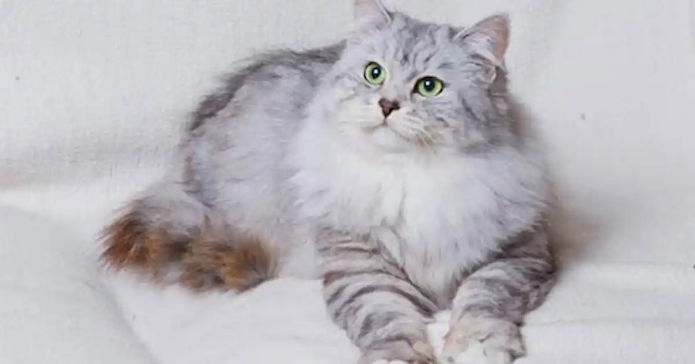
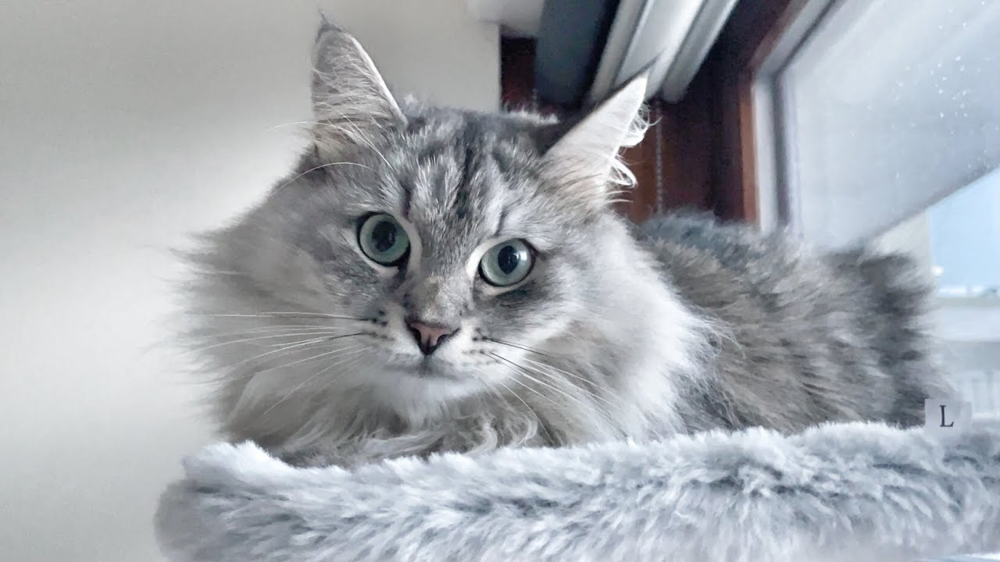

Gata : The Siberian cat
Gata's charm lies not only in his good looks but also in his exceptional tenderness and affection.

Informations :
- Name: Gata
- ID: 111222
- Date of Admission: April, 2022
- Date of Birth: Estimated to be April 02, 2022
- Breed: Siberian
- Sex: Male
- Weight: 3.8 kg
- Color/Markings: White with grey shadows


General Health Assessment:
- Gata seemed terrifies when arrived.
- There are evident signs of respiratory distress.
Vaccination History:
- Core vaccines administered:
- FVRCP (Feline Viral Rhinotracheitis, Calicivirus, Panleukopenia): Last administered on May 05, 2024.
- Rabies: Last administered on May 05, 2024.
- Due for booster shots: Rabies vaccine due on June 05, 2025.
Medical Concerns:
- Dental health: Great dental health
- Weight management: Gata's weight is great.
- Ongoing skin irritation: None
- Behavioral observation: Calm and shy.
- Current Medications: None.
Price : 100$
Are you interested in adopting this pet ?